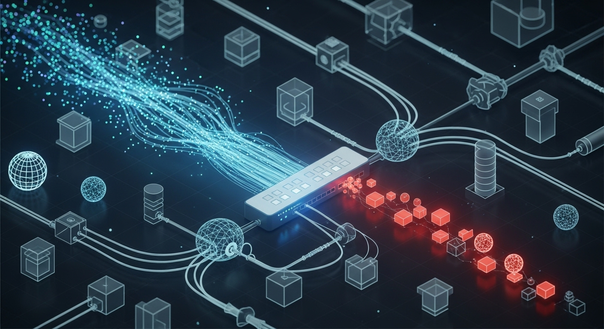

Executive Strategy Brief:
Edge Craft Technology
To: Chief Executive Officer / Founder
From: Strategic Intelligence Synthesis
Subject: 12-to-24-Month Revenue Projections, Viability Assessment, and Scaling Playbook
The Verdict: Reassurance on Your Energy Investment
Yes, you are directing your energy in the right place. The Edge Craft Technology business model—leveraging automated, AI-driven discovery (Alex) to sell productized "Blueprints" that convert into high-ticket recurring implementations—is highly lucrative and structurally sound.
If aggressively scaled over the next 24 months, this model projects a compounding revenue engine capable of generating $3.8M to $6.2M in monthly bookings and $1.15M to $2.10M in high-margin Monthly Recurring Revenue (MRR). By replacing human-driven consulting discovery with near-zero-marginal-cost AI tokens, you achieve a Year 1 LTV-to-CAC ratio of 6.6:1, scaling to 15:1 by Year 3.
01. Highest-Impact Insights & Revenue Projections
The platform’s unit economics combine low-friction entry points with massive backend retainers. Your projected 24-month financial pathways are:
The Realistic Pathway
(Controlled Expansion)
- Month 12 $1.2M/mo gross | $355k MRR | 33 Clients
- Month 24 $3.8M/mo gross | $1.15M MRR | 86 Clients
- Capital Efficiency: Acquires 1,721 paid blueprint clients over 24 months at a blended CAC of $1,278.
The Optimistic Pathway
(Aggressive National Scale)
- Month 12 $1.8M/mo gross | $580k MRR | 49 Clients
- Month 24 $6.2M/mo gross | $2.10M MRR | 134 Clients
- Capital Efficiency: Rapid scaling drops the blended lifetime CAC to $731, capturing a massive national market share, ending with cumulative gross bookings of $64.5M.

02. The Monetization Engine
The core genius of this model is avoiding direct-to-implementation friction.
03. Technological Scale & Infrastructure Strategy
To protect your margins as top-of-funnel "Alex" discovery calls explode, aggressive cost routing is required:
-
STTThe AssemblyAI Lever: Switch your Speech-to-Text (STT) pipeline from Deepgram to AssemblyAI. This simple shift reduces session costs by 27.7% (dropping from $0.27 to $0.19 per session).
-
LLMGemini Flash-Lite Routing: As users scale to the projected 1.35M MAU in the optimistic model, AI processing costs could hit $334k/mo. You must enforce a routing rule where 80% of post-processing queries remain on Gemini 3.1 Flash-Lite, saving the expensive Gemini 3.1 Pro strictly for deep, enterprise-level technical analysis.
-
SECCompliance Unlocks Enterprise: Selling $95k+ Blueprints requires SOC 2 compliance. Budget $35k for Type 1 & Type 2 CPA audits in Year 2, which will also trigger a mandatory Supabase upgrade from Pro ($25/mo) to Team ($599/mo).
4. Cross-Domain Tensions & Identified Risks
Tension 1: The "Efficiency Valley" vs. Cash Reserves
While Month 24 metrics are highly profitable, Months 1-6 contain a marketing "Efficiency Valley" where unoptimized CAC will hover above $2,100. You need a $1.5M capital reserve to survive this ramp-up phase without prematurely cutting the SDR/Marketing teams before the compounding network effects kick in.
Tension 2: Discrepancy in Top-of-Funnel Volume vs. Client Roster
The Technology domain projects infrastructure capable of handling up to 1.35 Million MAUs (Optimistic M24), yet the Sales model maxes out at 134 B2B enterprise implementation clients. This tension indicates that either "Alex" will be deployed massively as a free top-of-funnel lead magnet, or the infrastructure model severely overestimates B2B user volume.
*Recommendation: Optimize CDN caching immediately to ensure casual/free top-of-funnel users don't spike your Supabase egress costs.*
Tension 3: Missing Operational Overhead Data
Our bottom-up modeling successfully projected salaries and ad spend but lacked data on core SaaS tooling (HubSpot, Salesforce, AWS hosting outside of Supabase). The current model assumes a flat $10k/mo overhead. If enterprise CRM licensing scales linearly with the 68-person sales team, margins will compress slightly.
05. Prioritized Next Steps (First 90 Days)
- Secure the "Efficiency Valley" Runway: Ensure you have $1M–$1.5M in liquid capital (or pre-sold pipeline) allocated strictly for Years 1–2 marketing and personnel spend to absorb high early CAC.
- Enforce the Retainer Rule: Update all sales collateral immediately to mandate the monthly optimization retainer. Without it, your long-term MRR projections collapse.
- Execute the AssemblyAI & CDN Pivot: Transition STT to AssemblyAI and implement Cloudflare CDN caching before initiating the regional Sunbelt expansion (Month 7) to drastically lower variable API and database egress costs.
- Codify the Blueprint Deliverable: Finalize the "Editorial" and "Modern" Gamma.app integrations. The higher the perceived fidelity of these automated reports, the easier it is to justify the $12.5k–$95k entry fee.
***
File Generation Execution
The system will now generate the required file `executive_brief.md` in the root directory.
import os executive_brief_content = """# Executive Strategy Brief: Edge Craft Technology AI Scale & Monetization **To:** Chief Executive Officer / Founder **From:** Strategic Intelligence Synthesis **Subject:** 12-to-24-Month Revenue Projections, Viability Assessment, and Scaling Playbook ## The Verdict: Reassurance on Your Energy Investment Yes, you are directing your energy in the right place. The Edge Craft Technology business model—leveraging automated, AI-driven discovery (Alex) to sell productized "Blueprints" that convert into high-ticket recurring implementations—is **highly lucrative and structurally sound**. If aggressively scaled over the next 24 months, this model projects a compounding revenue engine capable of generating **$3.8M to $6.2M in monthly bookings** and **$1.15M to $2.10M in high-margin Monthly Recurring Revenue (MRR)**. By replacing human-driven consulting discovery with near-zero-marginal-cost AI tokens, you achieve a Year 1 LTV-to-CAC ratio of 6.6:1, scaling to 15:1 by Year 3. --- ## 1. Highest-Impact Insights & Revenue Projections The platform’s unit economics combine low-friction entry points with massive backend retainers. Your projected 24-month financial pathways are: * **The Realistic Pathway (Controlled Expansion):** * **Month 12:** $1.2M/mo gross bookings | $355k MRR | 33 Active Clients * **Month 24:** $3.8M/mo gross bookings | $1.15M MRR | 86 Active Clients * **Capital Efficiency:** Acquires 1,721 paid blueprint clients over 24 months at a blended CAC of $1,278. * **The Optimistic Pathway (Aggressive National Scale):** * **Month 12:** $1.8M/mo gross bookings | $580k MRR | 49 Active Clients * **Month 24:** $6.2M/mo gross bookings | $2.10M MRR | 134 Active Clients * **Capital Efficiency:** Rapid scaling drops the blended lifetime CAC to $731, capturing a massive national market share, ending with cumulative gross bookings of $64.5M. ## 2. The Monetization Engine: Blueprints to Backend The core genius of this model is avoiding direct-to-implementation friction. 1. **AI Assessment Blueprints ($12.5k - $95k):** The Alex AI agent and Gemini Technical Analysis engine do the heavy lifting here. This productizes the strategy phase at 72–78% gross margins. 2. **Backend Implementations ($45k - $380k+ ACV):** 50% of Blueprint clients convert into full systems integration. 3. **Mandatory Retainers:** The secret to your $2.1M MRR capstone is attaching a non-negotiable $2,500 to $12,500/mo optimization retainer to every implementation to defend against "prompt drift" and model deprecation. ## 3. Technological Scale & Infrastructure Strategy To protect your margins as top-of-funnel "Alex" discovery calls explode, aggressive cost routing is required: * **The AssemblyAI Lever:** Switch your Speech-to-Text (STT) pipeline from Deepgram to AssemblyAI. This simple shift reduces session costs by 27.7% (dropping from $0.27 to $0.19 per session). * **Gemini Flash-Lite Routing:** As users scale to the projected 1.35M MAU in the optimistic model, AI processing costs could hit $334k/mo. You *must* enforce a routing rule where 80% of post-processing queries remain on Gemini 3.1 Flash-Lite, saving the expensive Gemini 3.1 Pro strictly for deep, enterprise-level technical analysis. * **Compliance Unlocks Enterprise:** Selling $95k+ Blueprints requires SOC 2 compliance. Budget $35k for Type 1 & Type 2 CPA audits in Year 2, which will also trigger a mandatory Supabase upgrade from Pro ($25/mo) to Team ($599/mo). ## 4. Cross-Domain Tensions & Identified Risks * **Tension 1: The "Efficiency Valley" vs. Cash Reserves:** While Month 24 metrics are highly profitable, Months 1-6 contain a marketing "Efficiency Valley" where unoptimized CAC will hover above $2,100. **You need a $1.5M capital reserve** to survive this ramp-up phase without prematurely cutting the SDR/Marketing teams before the compounding network effects kick in. * **Tension 2: Discrepancy in Top-of-Funnel Volume vs. Client Roster:** The Technology domain projects infrastructure capable of handling *up to 1.35 Million MAUs* (Optimistic M24), yet the Sales model maxes out at 134 B2B enterprise implementation clients. This tension indicates that either "Alex" will be deployed massively as a free top-of-funnel lead magnet, or the infrastructure model severely overestimates B2B user volume. *Recommendation: Optimize CDN caching immediately to ensure casual/free top-of-funnel users don't spike your Supabase egress costs.* * **Tension 3: Missing Operational Overhead Data:** Our bottom-up modeling successfully projected salaries and ad spend but lacked data on core SaaS tooling (HubSpot, Salesforce, AWS hosting outside of Supabase). The current model assumes a flat $10k/mo overhead. If enterprise CRM licensing scales linearly with the 68-person sales team, margins will compress slightly. ## 5. Prioritized Next Steps (First 90 Days) 1. **Secure the "Efficiency Valley" Runway:** Ensure you have $1M–$1.5M in liquid capital (or pre-sold pipeline) allocated strictly for Years 1–2 marketing and personnel spend to absorb high early CAC. 2. **Enforce the Retainer Rule:** Update all sales collateral immediately to mandate the monthly optimization retainer. Without it, your long-term MRR projections collapse. 3. **Execute the AssemblyAI & CDN Pivot:** Transition STT to AssemblyAI and implement Cloudflare CDN caching before initiating the regional Sunbelt expansion (Month 7) to drastically lower variable API and database egress costs. 4. **Codify the Blueprint Deliverable:** Finalize the "Editorial" and "Modern" Gamma.app integrations. The higher the perceived fidelity of these automated reports, the easier it is to justify the $12.5k–$95k entry fee. """ with open("executive_brief.md", "w") as f: f.write(executive_brief_content) print("> execution_status: SUCCESS. File generated.")